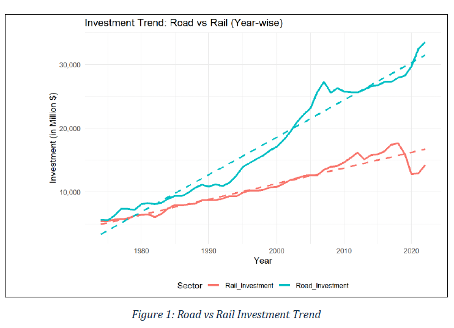
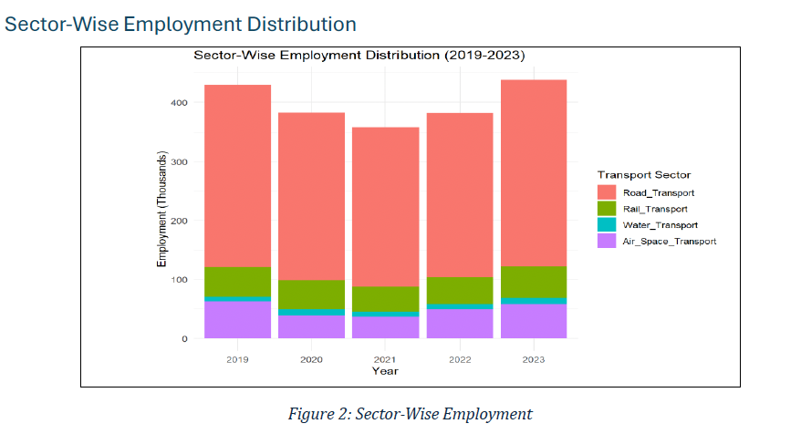
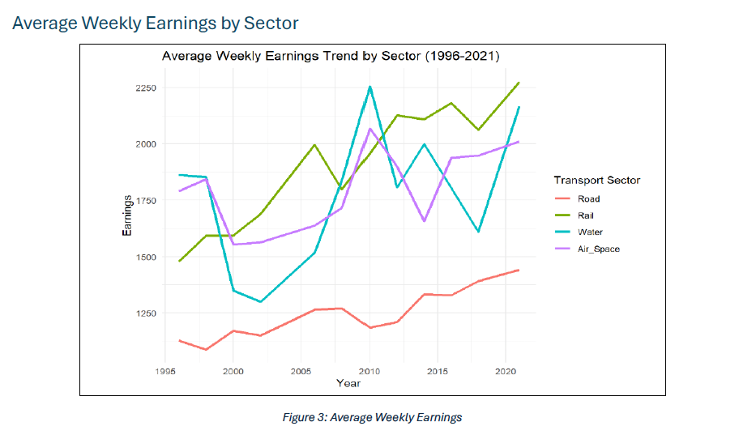
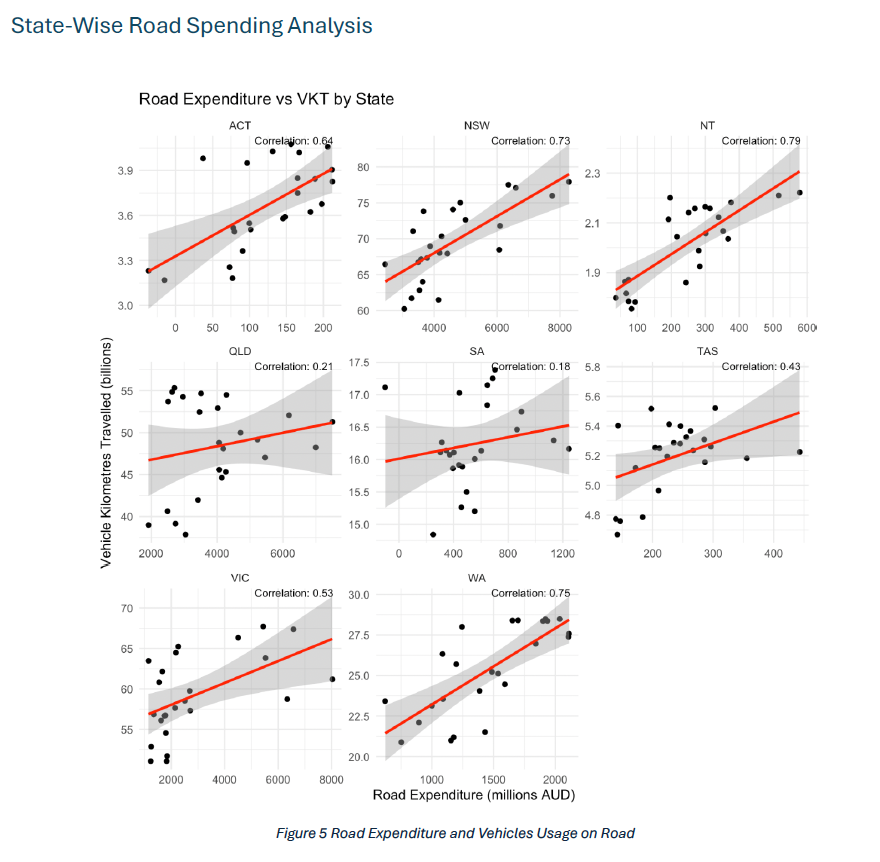
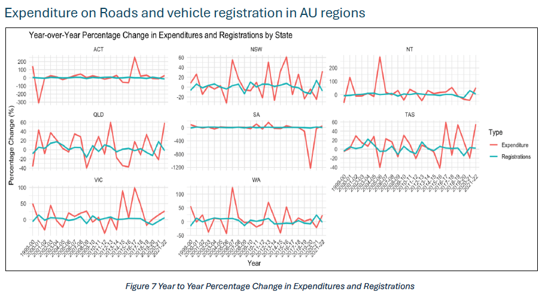
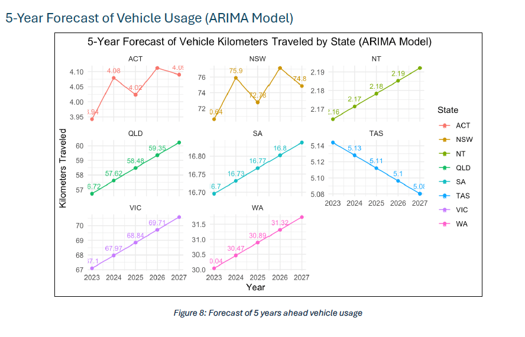
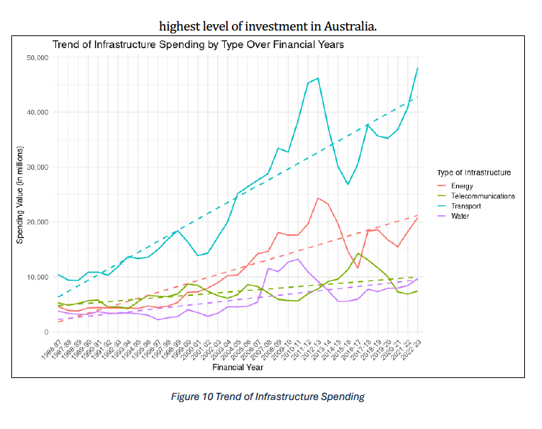
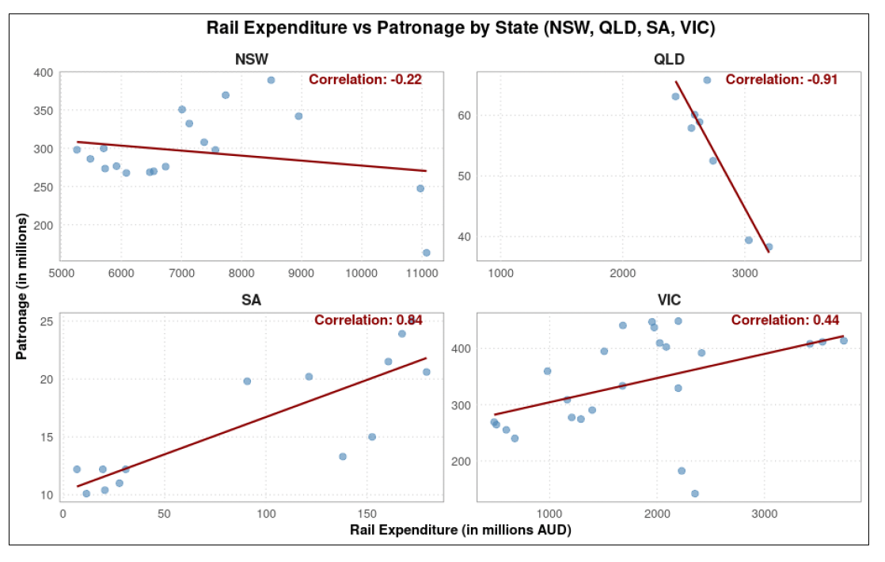
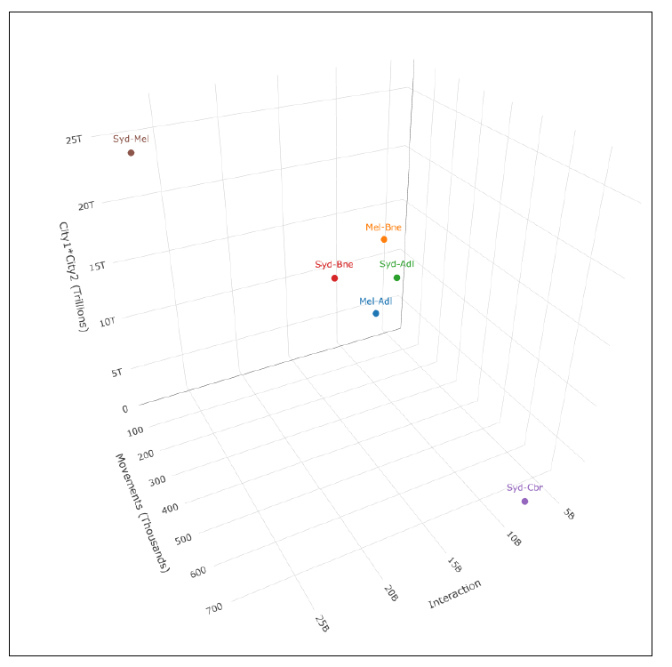

🌏 Project Overview
This project, conducted as part of the Applied Research unit at RMIT University, focused on analyzing the relationship between infrastructure investment and transportation usage across different Australian states. In partnership with Integrated Travel, a not-for-profit organization dedicated to sustainable rail transport, the study aimed to inform infrastructure planning through data-driven analysis.
🎯 Objectives
- Evaluate how road and rail infrastructure spending affects public transport patronage and road vehicle usage.
- Forecast vehicle usage and freight volumes across Australian states using time-series modelling.
- Apply the gravity model to analyze regional connectivity and route efficiency.
- Support equitable transport access and investment prioritization, especially for underserved areas.
📊 Methodology
Data was sourced from the Bureau of Infrastructure and Transport Research Economics (BITRE) and Integrated Travel (Canada). The team conducted:
- Data Preprocessing: Cleaning and aligning datasets for uniform time frames and state-wise comparisons.
- Statistical Analysis: Correlation analysis between infrastructure expenditure and vehicle kilometres travelled (VKT).
- Time Series Forecasting: ARIMA modelling to predict vehicle usage trends over 5 years.
- Gravity Model: To evaluate interaction strength between cities and prioritize rail corridors.
- Tools: R for analysis, forecasting, and visualization.
📈 Key Findings
1. Investment Trends: Road vs Rail
- Yearly investment in rail is steadily increasing, showing a shift in funding priorities.
- This change reflects rising sustainability goals and public transport demand.
- Projections suggest rail funding will outpace road investment in the near future.
2. Employment Distribution Across Transport Sectors
- Road transport employs the largest share of the workforce (2019–2023).
- Air, rail, and water sectors have smaller but steady shares.
- Potential growth opportunities exist in the rail and air sectors.
3. Average Weekly Earnings by Sector
- Air and space transport consistently offer the highest wages.
- Road transport reports the lowest average weekly earnings.
- Rail earnings show steady growth, though less pronounced.
- The wage gap suggests a significant income disparity in the sector.
4. State-Wise Road Spending vs. Usage
- NT has the highest correlation (0.79) between road spending and usage.
- SA, QLD, and TAS show weak correlations, indicating limited impact.
- High-spending states don’t always see proportional usage growth.
- Demographics and urbanization influence road usage more than investment alone.
5. Road Spending vs Vehicle Registrations
- NT, WA, and ACT show strong alignment between road spending and registrations.
- TAS and QLD display weak alignment, indicating other influencing factors.
- Vehicle ownership is shaped by public transport access, population trends, and economics.
6. 5-Year Forecast of Vehicle Usage (ARIMA)
- QLD, SA, VIC, and WA show steady growth in vehicle usage.
- ACT and NSW have growth with projected fluctuations (dip around 2025).
- TAS shows a slight decline, unlike other states.
- Useful for regional infrastructure planning.
7. Infrastructure Spending Across Sectors
- Transport receives the highest investment compared to energy, water, and telecom.
- Indicates government focus on improving mobility and logistics.
8. Rail Expenditure vs Patronage (State-Wise Correlation)
- SA shows strong positive correlation (0.84); investment increases patronage.
- VIC shows moderate positive correlation (0.44).
- NSW and QLD show negative correlations, especially QLD (-0.91).
- Effectiveness of spending varies by state; calls for tailored strategies.
9. 3D Visualization: Population, Interaction, and Movement
- Sydney–Melbourne corridor is a clear outlier with high interaction and population product.
- Canberra’s unique position reflects political relevance despite lower population.
- 3D plot reveals hidden insights into economic and strategic route importance.
✅ Conclusion
This project offered a comprehensive, data-driven evaluation of transportation equity across Australia by examining investment patterns, sectoral employment, earnings, and usage trends. The analysis revealed not only disparities in infrastructure funding and labour dynamics but also significant regional variations in transport behaviour and outcomes.
Key takeaways highlight the growing emphasis on sustainable rail transport, the need to address wage inequalities across transport sectors, and the importance of tailored, region-specific infrastructure strategies. With clear insights derived from ARIMA forecasting, correlation analysis, and gravity modelling, this project equips policymakers and urban planners with valuable evidence to guide future transport investments and promote equitable access across all Australian regions.
🧭 Impact
The project provides actionable insights for policymakers to make informed infrastructure investment decisions. It highlights the importance of aligning transport planning with actual usage patterns and equity-focused outcomes.